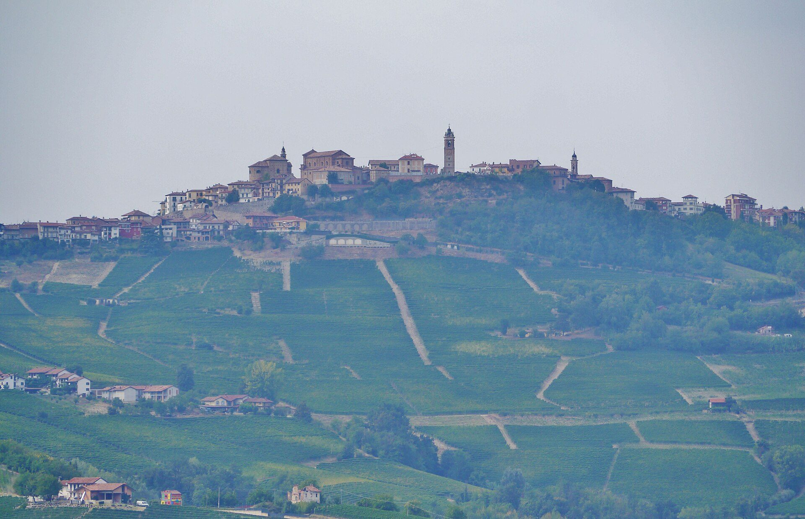
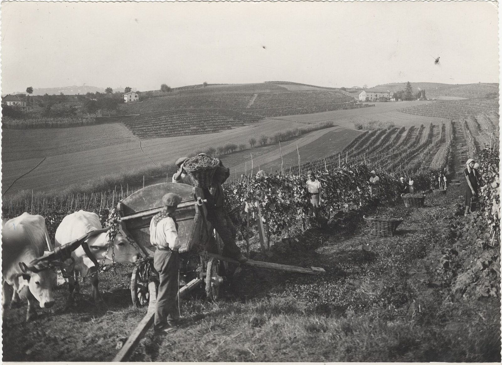
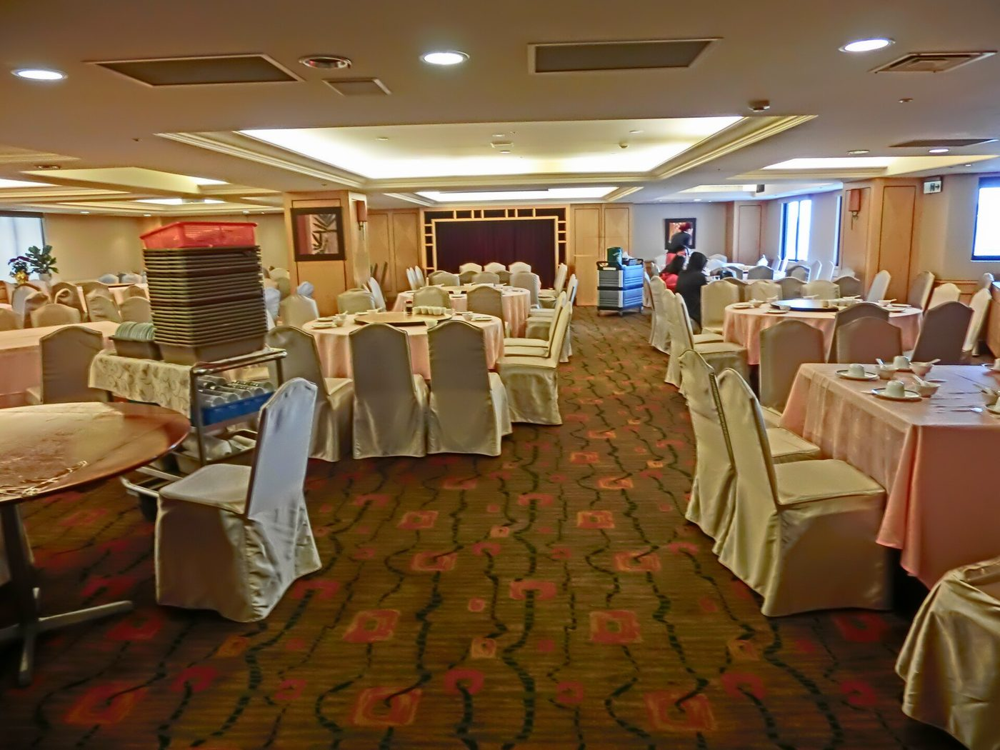

Cultura y lengua
Charlas, cine, música y cursos de piamontés para que la lengua de nuestros mayores siga sonando en Villa María.
Piamonte · Villa María · Desde 1997
Somos la Familia Piamontesa de Villa María: descendientes de quienes cruzaron el océano y eligieron esta tierra. Desde 1997 sostenemos su historia, su lengua y su mesa.

La Asociación Civil Familia Piamontesa de Villa María nació el 16 de marzo de 1997 para reunir a los descendientes de piamonteses y mantener viva una cultura que llegó en barco y echó raíces en la pampa gringa.
Hoy somos una asociación cultural, social, deportiva y filantrópica. Organizamos charlas, cursos, encuentros gastronómicos y actividades solidarias, y sostenemos la Escuela de Arquería.
En 2023, la lengua piamontesa fue declarada patrimonio cultural intangible de Villa María. Ese reconocimiento es de toda la colectividad y también es una invitación a seguir transmitiéndola.

Lo que hacemos
La tradición no se guarda en un museo: se practica, se enseña, se cocina y se comparte. Estas son las puertas por las que entra la vida a la asociación.
Charlas, cine, música y cursos de piamontés para que la lengua de nuestros mayores siga sonando en Villa María.
Una disciplina que nos representa: entrenamiento, torneos sociales y participación en competencias provinciales.
Agnolotti, tajarin, bagna cauda y bonet. La cocina como memoria y como excusa para encontrarnos.
Una asociación abierta que colabora con instituciones de la ciudad y acompaña a las familias en cada etapa.
“No se trata de volver al Piamonte. Se trata de saber de dónde venimos para saber quiénes somos.”
La agenda
La asociación se vive en el calendario: una cena, un torneo, una charla, un curso. Algunas actividades son abiertas y otras están pensadas para socios.
Programa sujeto a confirmación. Las actividades para socios requieren reserva previa. Consultá por cupos, valores y formas de pago en la secretaría.
El salón
El salón de la Familia Piamontesa es el lugar donde la colectividad celebra sus encuentros. Un espacio cálido, con cocina propia y una mesa que se adapta a tu evento.
Las fotos actuales del salón se incorporarán próximamente. Escribinos para coordinar una visita.

Genealogía
Reconstruir la historia familiar es un viaje. Reuní nombres, fechas y lugares; buscá en FamilySearch; contrastá con actas y registros. En la asociación podemos orientarte y compartir lo que otras familias ya encontraron.
Nombres, fechas, pueblos, apodos, fotos y relatos de los mayores. Todo suma.
El árbol global reúne registros de Argentina, Italia y el mundo. Empezá por tu apellido.
Las actas civiles y parroquiales confirman la historia. Después, compartila con la familia.
La comisión
La comisión directiva trabaja para que la asociación siga creciendo y para que cada socio encuentre su lugar. Estas son las autoridades surgidas de la asamblea de 2024.
Comisión directiva surgida de la asamblea del 13 de noviembre de 2024. La composición completa se actualiza en cada renovación.